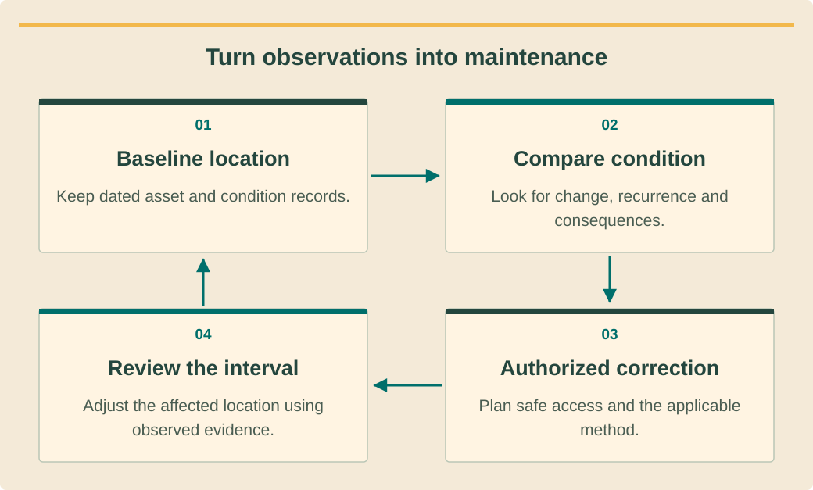

Commissioning, technical service and O&Mהפעלה, שירות טכני ותחזוקהการทดสอบส่งมอบ บริการเทคนิค และบำรุงรักษา · 6 / 9
Preventive O&M and storm responseתחזוקה מונעת ותגובה לסערהบำรุงรักษาป้องกันและตอบสนองพายุ
Build a property-specific maintenance plan that changes with evidence.לבנות תוכנית תחזוקה לנכס המשתנה עם ראיות.ทำแผนบำรุงรักษาเฉพาะอาคารที่ปรับตามหลักฐาน.
What you will be able to doמה תדעו לעשותสิ่งที่คุณจะทำได้
- Set inspection priorities from actual exposure.לקבוע עדיפויות לפי חשיפה.จัดลำดับตรวจจากสภาพสัมผัส.
- Plan safe cleaning and weather response.לתכנן ניקוי ותגובה בטוחים.วางทำความสะอาดและตอบอากาศปลอดภัย.
- Use maintenance history to refine intervals.להשתמש בהיסטוריה לעדכון מרווחים.ใช้ประวัติปรับรอบ.
Plan by asset and conditionלתכנן לפי נכס ומצבวางตามทรัพย์สินและสภาพ
Create an asset register covering modules, mounting, cables, inverter, battery, meters and EV equipment. For each, record applicable maintenance guidance, access requirements, inspection evidence and owner. The plan should include preventive tasks and a route for corrective work discovered during inspection.יוצרים רשם מודולים, עיגון, כבלים, ממיר, מצבר, מדים וטעינה. לכל פריט הנחיה, גישה, ראיות ואחראי. התוכנית כוללת מניעה ומסלול תיקון ממצאי בדיקה.ทำทะเบียนแผง ยึด สาย อินเวอร์เตอร์ แบตเตอรี่ มิเตอร์ และ EV แต่ละอย่างบันทึกแนวดูแล ทางเข้า หลักฐานตรวจ และเจ้าของ แผนรวมงานป้องกันกับทางแก้สิ่งพบระหว่างตรวจ.
Use exact manufacturer requirements and the site’s observed conditions to establish intervals. A shaded resort roof with bird activity and salt exposure may need different attention from a sheltered villa. IEC maintenance scope supports structured maintenance; it does not impose a universal monthly cleaning schedule.משתמשים בדרישות יצרן ובמצב נצפה לקביעת מרווח. גג מוצל עם ציפורים ומלח עשוי לדרוש טיפול שונה מווילה מוגנת. היקף תחזוקת IEC תומך במבנה ולא מחייב ניקוי חודשי אחיד.ใช้ข้อกำหนดผู้ผลิตและสภาพพบกำหนดรอบ หลังคารีสอร์ตมีเงา นก และเกลืออาจต้องดูต่างจากวิลล่ากำบัง ขอบเขตบำรุง IEC สนับสนุนระบบงาน ไม่กำหนดล้างรายเดือนทุกแห่ง.
Inspect coastal changeלבדוק שינוי חופיตรวจการเปลี่ยนสภาพชายฝั่ง
Look for changes from the accepted baseline: damaged supports, loose cable management, obstructed drainage, corrosion indicators and new shading. Record location and progression rather than merely ticking “checked.” Comparing repeat photographs can show whether a condition is stable or requires earlier intervention.מחפשים שינוי מהבסיס: תמיכה פגומה, כבלים רופפים, ניקוז חסום, סימני קורוזיה וצל חדש. מתעדים מיקום והתקדמות במקום ״נבדק״ בלבד. צילומים חוזרים מראים יציבות או צורך בהקדמה.ดูการเปลี่ยนจากฐานรับ เช่น รองรับเสีย จัดสายหลวม ระบายตัน สัญญาณกัดกร่อน และเงาใหม่ บันทึกตำแหน่งกับแนวโน้ม ไม่ติ๊กตรวจแล้วอย่างเดียว ภาพซ้ำช่วยเห็นคงที่หรือต้องแทรกก่อน.
Condition-based findings should modify priorities with a documented reason. Do not assume that every salt deposit demands the same chemical treatment or hardware replacement. Refer material compatibility questions to the relevant manufacturer and retain acceptance criteria for any repair or protective treatment.ממצאים מעדכנים עדיפות עם נימוק. לא כל משקע מלח דורש אותו חומר או החלפה. שאלת תאימות מופנית ליצרן ונשמר קריטריון לתיקון או טיפול מגן.สิ่งพบตามสภาพควรปรับลำดับพร้อมเหตุ ไม่ถือว่าเกลือทุกคราบต้องสารเคมีหรือเปลี่ยนเหมือนกัน ส่งคำถามวัสดุให้ผู้ผลิตและเก็บเกณฑ์รับสำหรับซ่อมหรือเคลือบป้องกัน.
See the ideaרואים את הרעיוןมองเห็นแนวคิด
Turn observations into maintenanceלהפוך תצפיות לתחזוקהเปลี่ยนข้อสังเกตเป็นบำรุงรักษา

Read the diagram as textקריאת התרשים כטקסטอ่านแผนภาพเป็นข้อความ
- Baseline locationמצב בסיס במיקוםฐานเทียบตำแหน่ง — Keep dated asset and condition records.שומרים רישומי ציוד ומצב מתוארכים.เก็บบันทึกทรัพย์สินกับสภาพมีวัน.
- Compare conditionהשוואת מצבเทียบสภาพ — Look for change, recurrence and consequences.מחפשים שינוי, הישנות והשלכות.ดูการเปลี่ยน กลับเป็น และผลกระทบ.
- Authorized correctionתיקון מורשהแก้ที่อนุญาต — Plan safe access and the applicable method.מתכננים גישה בטוחה ושיטה מתאימה.วางทางปลอดภัยและวิธีที่ใช้ได้.
- Review the intervalבדיקת המרווחทบทวนรอบตรวจ — Adjust the affected location using observed evidence.מתאימים מיקום מושפע לפי ראיות.ปรับจุดกระทบตามหลักฐานพบ.
Cleaning is a controlled taskניקוי הוא משימה מבוקרתทำความสะอาดเป็นงานควบคุม
Before cleaning, assess whether soiling is the likely performance issue and whether safe access is available. Follow the exact module manual for permitted methods and materials. Do not invent universal water pressure, chemical concentration or temperature limits from another module family.לפני ניקוי מעריכים אם לכלוך הוא הסיבה ואם גישה בטוחה. פועלים לפי מדריך מודול לשיטה וחומר. לא ממציאים לחץ, ריכוז או טמפרטורה כלליים ממשפחה אחרת.ก่อนล้างประเมินว่าคราบเป็นเหตุผลิตหรือไม่และเข้าถึงปลอดภัยไหม ตามคู่มือแผงจริงเรื่องวิธีและวัสดุ อย่าเดาแรงดันน้ำ ความเข้มสาร หรืออุณหภูมิใช้ทุกแผงจากอีกตระกูล.
Protect personnel from falls and avoid directing a property cleaner into an electrical work area without the required plan. Record the pre-clean condition, method and post-clean observations. If output improves, consider weather and measurement differences before attributing the entire change to cleaning.מגינים מנפילה ולא שולחים מנקה לאזור חשמל בלי תוכנית. מתעדים מצב לפני, שיטה ואחרי. אם תפוקה השתפרה בוחנים מזג אוויר ומדידה לפני ייחוס הכול לניקוי.ป้องกันตกและไม่ส่งคนทำความสะอาดอาคารเข้าเขตไฟฟ้าไร้แผน บันทึกก่อน วิธี และหลัง หากผลิตดีขึ้น ให้ดูอากาศและความต่างวัดก่อนยกผลทั้งหมดให้การล้าง.
Prepare and recover from stormsלהתכונן ולהתאושש מסערהเตรียมและฟื้นจากพายุ
Use the property’s weather plan to schedule pre-event checks of accessible drainage, loose materials and emergency contacts when conditions remain safe. Do not send crews onto roofs to meet a maintenance calendar during unsafe weather. Planned service windows must yield to site-specific access and rescue limits.לפי תוכנית מזג אוויר בודקים ניקוז נגיש, חומרים רופפים ואנשי קשר כשבטוח. לא עולים לגג כדי לעמוד ביומן במזג מסוכן. חלון שירות כפוף למגבלות גישה וחילוץ.ใช้แผนอากาศตรวจทางระบายน้ำที่เข้าถึงได้ ของหลวม และผู้ติดต่อก่อนเหตุเมื่อยังปลอดภัย อย่าส่งทีมขึ้นหลังคาเพราะถึงรอบในอากาศอันตราย ช่วงบริการต้องยอมตามเกณฑ์เข้าและกู้ภัยไซต์.
After the event, triage safe observations and monitoring evidence before deciding on access or restoration. Flooding, impact damage and displaced equipment require authorized assessment. Record what was inspected, what could not be inspected and which restrictions remain; a return of sunshine does not itself release damaged equipment.אחרי אירוע ממיינים תצפיות בטוחות וניטור לפני גישה או השבה. הצפה, מכה והזזה דורשות הערכה מורשית. מתעדים נבדק, לא נבדק והגבלות; חזרת שמש אינה משחררת ציוד פגום.หลังเหตุคัดสิ่งเห็นปลอดภัยและข้อมูลก่อนตัดสินเข้า/คืน น้ำท่วม กระแทก หรือเครื่องเคลื่อนต้องผู้มีสิทธิ์ประเมิน บันทึกตรวจอะไร ไม่ได้ตรวจอะไร และข้อจำกัดค้าง แดดกลับไม่ปล่อยเครื่องเสียเอง.
Worked exampleדוגמה פתורהตัวอย่างพร้อมวิธีทำ
A changing inspection intervalמרווח בדיקה משתנהปรับรอบตรวจ
Invented case: repeat photographs show a drainage obstruction growing over three visits near one roof cable route. Other zones remain unchanged.מקרה מדומה: צילומים בשלושה ביקורים מראים חסימת ניקוז גדלה ליד כבל; אזורים אחרים יציבים.กรณีสมมติ ภาพสามครั้งแสดงทางระบายตันเพิ่มใกล้สายโซนหนึ่ง ส่วนอื่นคงเดิม.
- Identify the affected location and likely consequence rather than changing every interval blindly.מזהים מיקום והשלכה במקום לשנות הכול.ระบุจุดกับผลกระทบ ไม่เปลี่ยนทุกช่วงสุ่ม.
- Arrange an authorized corrective task with safe access and relevant manufacturer limits.מתאמים תיקון מורשה בגישה בטוחה ומגבלות יצרן.จัดแก้อนุญาตพร้อมทางปลอดภัยและขีดผู้ผลิต.
- Shorten review of that location based on the observed recurrence and record the reason.מקצרים בדיקת מיקום לפי חזרה ומתעדים סיבה.ลดช่วงตรวจจุดนั้นตามการกลับเป็นและบันทึกเหตุ.
The plan responds to evidence instead of applying one universal frequency to every asset.התוכנית מגיבה לראיות ולא לתדירות אחידה לכל פריט.แผนตอบหลักฐานแทนความถี่เดียวทุกทรัพย์สิน.
Your turnעכשיו מתרגליםถึงเวลาฝึกฝน
Cleaning request during windבקשת ניקוי ברוחขอล้างขณะลมแรง
Invented exercise: a resort schedules roof cleaning during weather outside its approved access limits because guests arrive tomorrow.תרגיל מדומה: ריזורט קובע ניקוי מחוץ למגבלות מזג מאושרות כי אורחים מגיעים מחר.แบบฝึกสมมติ รีสอร์ตกำหนดล้างหลังคาช่วงอากาศนอกเกณฑ์ขึ้นที่อนุมัติเพราะแขกมาพรุ่งนี้.
- Give the work decision and reason.לתת החלטת עבודה ונימוק.ให้คำตัดสินงานกับเหตุ.
- Offer a useful independent action.להציע פעולה עצמאית מועילה.เสนองานอิสระมีประโยชน์.
Compare with the model answerהשוו לפתרון לדוגמהเปรียบเทียบกับแนวคำตอบ
Defer roof access until the site plan permits it. Review monitoring, prepare approved cleaning materials and reschedule with the property contact; do not let the guest deadline override access and rescue conditions. Document the delay and any unresolved performance concern separately.דוחים גישה עד היתר תוכנית. בודקים ניטור, מכינים חומרים מאושרים ומתאמים מחדש; מועד אורחים אינו גובר על גישה וחילוץ. מתעדים דחייה וחשש ביצועים בנפרד.เลื่อนขึ้นหลังคาจนแผนอนุญาต ดูข้อมูล เตรียมวัสดุล้างที่อนุมัติ และนัดใหม่ กำหนดแขกไม่เหนือเกณฑ์เข้าและกู้ภัย บันทึกเลื่อนกับประเด็นสมรรถนะค้างแยก.
Your exercise notebookמחברת התרגול שלכםสมุดแบบฝึกหัดของคุณ
Write your reasoning and the evidence you would collect. Notes stay in this browser. Export a copy to share with your trainer.כתבו את דרך החשיבה ואת הראיות שתאספו. המחברת נשמרת בדפדפן הזה. הורידו עותק כדי להעביר לבדיקה של אחראי ההדרכה.เขียนเหตุผลและหลักฐานที่จะรวบรวม บันทึกเก็บในเบราว์เซอร์นี้ ส่งออกสำเนาเพื่อส่งให้ผู้ฝึกสอนตรวจ
Before handing overלפני שמעבירים הלאהก่อนส่งมอบงาน
- Asset-specific plan and history available.תוכנית והיסטוריה לפי ציוד זמינות.มีแผนกับประวัติตามอุปกรณ์.
- Weather and access limits checked.מגבלות מזג וגישה נבדקו.ตรวจเกณฑ์อากาศและเข้า.
- Findings drive corrective work and intervals.ממצאים מנחים תיקון ומרווחים.สิ่งพบกำหนดแก้และรอบ.
Watch and applyצופים ומיישמיםดูแล้วนำไปใช้
A professional demonstrationהדגמה מקצועיתการสาธิตจากผู้เชี่ยวชาญ
Before pressing playלפני שמפעיליםก่อนกดเล่น
Distinguish the webinar’s commissioning checks from measurements that can support ongoing maintenance.הבדילו בדיקות הפעלה ממדידות התומכות בתחזוקה שוטפת.แยกตรวจส่งมอบจากการวัดที่ช่วยบำรุงรักษาต่อเนื่อง.
Tools and Techniques for Commissioning and Maintaining PV Systems
English webinar presented by Fluke Solar Application Specialist Will White, hosted by Test Equipment Depot. Covers measurement categories, commissioning and O&M. US examples and demonstrated procedures require local and model-specific review.וובינר באנגלית של מומחה הסולאר ב-Fluke, Will White, באירוח Test Equipment Depot. עוסק בקטגוריות מדידה, הפעלה ותחזוקה. דוגמאות אמריקאיות ונהלים מחייבים בדיקת תחולה מקומית ודגם.เว็บบินาร์ภาษาอังกฤษโดย Will White ผู้เชี่ยวชาญโซลาร์ Fluke จัดโดย Test Equipment Depot ครอบคลุมประเภทวัด ทดสอบส่งมอบ และ O&M ตัวอย่างสหรัฐฯ และวิธีต้องตรวจท้องถิ่นกับรุ่น.
Connect it to this lessonמחברים לחומר בשיעורเชื่อมกับบทเรียนนี้
Maintenance evidence should reveal change and guide a specific authorized action.ראיות תחזוקה צריכות לזהות שינוי ולכוון פעולה מורשית מסוימת.หลักฐานบำรุงควรเผยการเปลี่ยนและชี้งานอนุญาตเฉพาะ.
Pause and explainעוצרים ומסביריםหยุดแล้วอธิบาย
Why does the drainage case justify reviewing one location more often rather than every asset?מדוע מקרה הניקוז מצדיק בדיקה תכופה למיקום אחד ולא לכל הציוד?ทำไมกรณีระบายจึงให้ตรวจจุดเดียวถี่ขึ้นแทนทุกทรัพย์สิน?
The guidance is available in all three languages. The video keeps the publisher’s original audio; captions and translations depend on the publisher and YouTube. If the embedded player is unavailable, use the source link.הנחיות הצפייה זמינות בשלוש השפות. הסרטון נשאר בשפת המקור; כתוביות ותרגום תלויים במפרסם וב־YouTube. אם הנגן אינו זמין, פתחו את קישור המקור.คำแนะนำมีครบสามภาษา วิดีโอใช้เสียงต้นฉบับ คำบรรยายและการแปลขึ้นกับผู้เผยแพร่และ YouTube หากเครื่องเล่นใช้ไม่ได้ให้เปิดลิงก์ต้นฉบับ
Check your understanding · 80% to passבדיקת הבנה · ציון מעבר 80%ตรวจความเข้าใจ · ผ่านที่ 80%
Sources and review datesמקורות ותאריכי בדיקהแหล่งข้อมูลและวันที่ตรวจสอบ
- IEC 62446-2 maintenance scope
Maintenance scope, not a universal inspection or cleaning interval.היקף תחזוקה, לא מרווח בדיקה או ניקוי אחיד.ขอบเขตการบำรุงรักษา ไม่ใช่ช่วงเวลาตรวจหรือทำความสะอาดที่ใช้ได้ทุกระบบ
- Operate and maintain an existing PV system
US lifecycle/O&M guidance; adapt weather and service planning to the actual island property.הנחיות מחזור חיים ותחזוקה מארה״ב; יש להתאים מזג אוויר ותכנון שירות לנכס באי.แนวทางวงจรชีวิตและบำรุงรักษาจากสหรัฐฯ ปรับแผนอากาศและบริการให้ตรงอาคารบนเกาะจริง
- PV and energy-storage O&M best practices
Historic 2018 PV/storage O&M guide; not current Thai law or a substitute for equipment manuals.מדריך תחזוקת סולאר ואגירה משנת 2018; אינו חוק תאילנדי עדכני או תחליף למדריכי ציוד.คู่มือบำรุงรักษา PV/กักเก็บปี 2018 ไม่ใช่กฎหมายไทยปัจจุบันหรือคู่มืออุปกรณ์แทน
- PV module O&M manual
Module inspection/cleaning scope and records; exact cleaning parameters remain manufacturer-specific.היקף בדיקה, ניקוי ותיעוד מודולים; פרמטרי ניקוי מדויקים נותרים תלויי יצרן.ขอบเขตตรวจ ทำความสะอาด และบันทึกแผง ค่าทำความสะอาดจริงขึ้นกับผู้ผลิต
- Solar work at height
US solar fall-hazard guidance for comparison only; OSHA thresholds are not presented as Thai law.הנחיות אמריקאיות לסיכוני נפילה בסולאר להשוואה בלבד; ספי OSHA אינם מוצגים כחוק תאילנדי.แนวทางความเสี่ยงตกจากที่สูงงานโซลาร์ของสหรัฐฯ เพื่อเปรียบเทียบ ไม่ใช้เกณฑ์ OSHA เป็นกฎหมายไทย
Reading and quizzes build knowledge. Field work and practical sign-off require the responsible qualified professional.קריאה וחידונים בונים ידע. עבודת שטח ואישור כשירות מעשית נעשים בהנחיית בעל המקצוע המוסמך והאחראי.การอ่านและแบบทดสอบสร้างความรู้ งานภาคสนามและการรับรองความสามารถปฏิบัติต้องอยู่ภายใต้ผู้เชี่ยวชาญที่มีคุณสมบัติและรับผิดชอบ